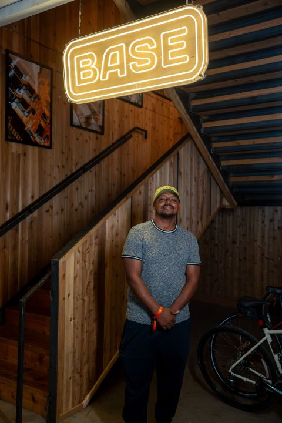
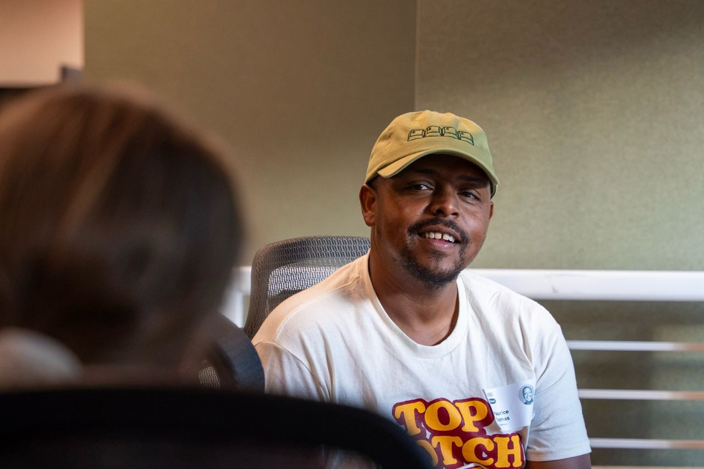

Showing how I build, not just talking about it.
The Base Power hackathon brought together a talented group of builders for a hands-on hiring event shaped around the company mission: “Energy abundance for all.” It was an opportunity to engage with a consequential energy problem and demonstrate product thinking through real collaboration and execution.


What the experience tested
- Building and making decisions under a compressed deadline.
- Learning unfamiliar systems and testing ideas quickly.
- Working alongside other builders through ambiguity and pressure.
- Communicating how I think through the product, technical, and human sides of a problem.
WeekendImmersive build format
EnergyReal-world problem space
TeamCollaborative execution
Why it matters
The value of a hackathon is bigger than the trophy. It reveals how people operate when the clock is moving: how they scope, collaborate, adapt, and turn an idea into something concrete. This experience reinforced my preference for environments where builders can demonstrate their thinking through the work itself.
Read the original LinkedIn post ↗ ← Back to selected work